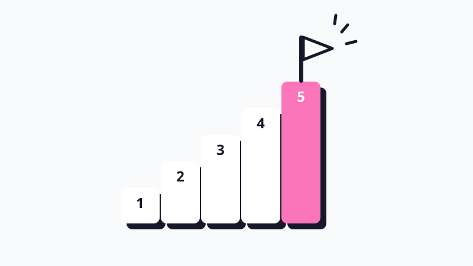

인사이트원생 구간별 마케팅 전략 2026
원생 1,000명 넘는 학원은 전국 학원과 교습소 중 상위 1.5%예요. 그런데 몇 퍼센트인지보다 중요한 건 지금 우리 학원 구간에 맞는 마케팅이에요.
원장님들이 블로그, 유튜브, 릴스에 직접 공유한 마케팅 꿀팁을 구간별로 모아 정리했어요 🫡
우리 학원은 어느 구간일까요
원생 수에 따라 5개 구간으로 나눴어요. 구간마다 원장님이 맡는 일과 부딪히는 벽이 달라서, 효과가 있는 마케팅도 달라집니다.
| 구간 | 원생 수 | 전국 위치 | 이런 학원이에요 | 이 구간의 숙제 |
|---|---|---|---|
| 1 | 10~50명 | 상위 77~52% | 원장님 혼자 수업하고 상담하는 교습소, 공부방, 개원 초기동네에서 "검색되는" 학원 되기 |
| 2 | 50~110명 | 상위 52~30% | 강사님이 한두 분 생기고 일을 나누기 시작하는 단계설명회와 학부모 리포트로 등록 흐름 만들기 |
| 3 | 110~300명 | 상위 30~10% | 강사님이 여럿이고 반이 늘어나는 단계신규생 받을 준비와 재원생 추천 |
| 4 | 300~1,000명 | 상위 10~1.5% | 원장님이 모든 학부모를 직접 챙기기 어려운 중대형 학원학부모 소통을 시스템으로, 무대는 설명회와 맘카페 |
| 5 | 1,000명 이상 | 상위 1.5% | 여러 지점을 운영하거나 한 곳이 아주 큰 대형 학원브랜드로 모으고, 원장님을 대신할 사람 키우기 |
전국 위치는 교육부 학원교습소정보(2026년 8월 31일) 기준, 운영 중인 학원과 교습소 138,568곳의 정원으로 계산했어요. 정원은 등록 최대 인원이라 실제 원생 수보다 클 수 있어요.
이 글에서 중요한 건 원생 수 자체가 아니에요. 학생 수 구간마다 잘 맞고 효과적인 마케팅 전략이 따로 있다는 점입니다. 1,000명 학원도 처음엔 10명이었고, 다음 구간으로 올려 준 건 그때그때 구간에 맞춘 마케팅이었어요.
이 자료는 크래빗팀이 원장님들께서 실제로 해 보고 효과가 좋았던 사례만 모아 정리한 보고서입니다. 편하게 읽어 보신 뒤, 아래 내용을 캡처하거나 복사해서 원장님을 가장 잘 아는 챗GPT나 AI 툴에 넣어 보세요. "우리 학원에는 어떤 전략을 적용하면 좋을까?" 하고 함께 아이디어를 나눠 보시길 권해 드려요.
동네에서 검색되는 학원 되기
원장님 혼자 수업하고 상담하는 구간이에요. 광고비를 크게 쓰기보다 작게 여러 번 해 보고, 기록을 쌓는 게 답입니다.
1전단지는 넓게 한 번보다 좁은 동네에 여러 번 뿌리세요.
전단 4,000부를 뿌리고 문의가 2건이었다는 원장님 이야기가 드물지 않아요. 반대로 아파트 게시판 광고와 공동현관 자석 전단, 아이들이 일찍 끝나는 수요일 배부를 반복해 9명에서 30~40명이 된 공부방 원장님이 있습니다. 지역 부동산 카페에 경력과 수업 방식, 정원을 적은 글 하나로 4년째 연락을 받는 원장님도 있어요.
2개원 준비 때부터 블로그에 기록하고, 올린 글은 지우지 마세요.
매물을 보러 다니고 인테리어를 하는 과정부터 매주 블로그에 올린 7평 교습소 원장님은 30명 목표를 일찍 채웠어요. 그 원장님이 가장 후회한 건 예전 글을 지운 것과 확장 뒤 블로그를 쉰 거예요. 학부모가 검색했을 때 보일 정보가 쌓여 있어야 합니다.
3광고보다 우리 학원 차별점 한 문장이 먼저예요.
학원이 몰린 동네일수록 전단 속 경쟁자도 많아요. 대치동은 신문과 함께 배달되는 광고 전단 10장 중 9장 가까이가 학원 전단일 정도입니다. 이 속에서 눈에 띄려면 광고비보다 "우리 학원은 무엇이 다른지" 한 문장이 먼저 정리돼 있어야 해요. 작은 학원이라면 1:1 밀착 관리가 가장 강한 무기입니다. 풀이 과정까지 확인하고 틀린 유형만 모아 다시 풀게 하는 것처럼, 대형 학원이 하기 어려운 관리를 차별점으로 내세우세요.
4첫 학생들의 변화와, 이걸 잘 알리는 것이 다음 신입생 모집에 가장 크게 작용해요.
좋은 성과를 내는 것도 중요하지만, 점수는 원장님 마음대로 나오지 않죠. 그래서 결과만큼 과정을 보여 주는 게 중요해요. 아이들을 어떤 커리큘럼으로 매일 공부시키는지, 우리 학원만의 차별화는 무엇인지 알려 주세요.
작아도 단단한 시스템을 강조해서, 학부모님이 "우리 아이를 여기 보내면 정말 촘촘하게 케어받겠구나" 하는 신뢰를 갖게 해 주세요. 원생 20~30명일 때 아이들을 남겨 숙제까지 봐준 것이 그대로 입소문이 된 원장님도 있습니다.
5광고는 10만 원 단위로, 채널 하나씩 시험하세요.
당근 광고, 블로그, 지역 카페 글, 인스타 수업 사진처럼 적은 돈으로 해 볼 수 있는 채널이 많아요. 한 번에 하나씩 돌려 보고 문의가 몇 건 왔는지 적어 두면 다음 달 어디에 돈을 쓸지 보입니다. 네이버 플레이스는 지도에서 학원을 찾는 학부모, 당근은 동네에서 스치듯 보는 학부모를 만나는 채널이라 역할이 달라요.
6선물은 뻔한 굿즈보다 아이 이름이 들어간 것으로 준비하세요.
학원 로고가 찍힌 볼펜이나 뻔한 굿즈는 받아도 금방 잊혀요. 아이 이름을 적은 손편지, 이름 스티커를 붙인 커스텀 간식 구디백처럼 "나만을 위한 선물"이 훨씬 오래 기억되고, 아이가 먼저 친구에게 보여 줍니다.
인스타그램을 하는 학년이라면 받은 선물을 스토리에 올려 자랑하도록 권해 보세요. 학원 계정을 태그하면 작은 선물을 하나 더 주는 식으로요. 친구들이 그 게시물을 보고 학원 이름을 알게 되니, 가장 자연스러운 입소문이 됩니다.
7개원한다면 겨울방학 초가 가장 좋아요.
1월 1일이면 이미 다닐 학원을 정한 가정이 많아요. 방학과 휴가철에는 등록이 줄어드니, 홍보는 학부모가 학원을 고르는 시기에 몰아서 하세요. 개원 뒤 첫 3개월에 동네 인지도가 거의 정해집니다.
설명회와 학부모 리포트로 등록 흐름 만들기
강사님이 한두 분 생기고, 원장님 혼자 하던 일을 나누기 시작하는 구간이에요. 60명대와 100명 직전에 한 번씩 멈추기 쉽습니다.
1원생 수나 성과에 정체기가 왔다 싶으면 설명회를 색다르게 기획해 돌파구를 찾아보세요.
신학기가 시작되는 3월과 2학기가 시작되는 9월에 설명회를 열고, 재원생 학부모도 함께 초대해 보세요. 10~12월 설명회를 한 달 전부터 포스터, 블로그, 인스타, 아파트 광고 순으로 준비해 참석자 14명이 전원 등록한 원장님도 있어요. 설명회는 끝난 뒤 연락까지가 한 세트입니다.
2블로그는 주 1회 이상, 글감은 상담 때 받은 질문으로 채우세요.
"동 이름+학교급" 키워드를 하나씩 채워 첫해 70~80명, 이듬해 100명이 된 학원이 있어요. 질문, 답변, 이유, 제안 순서로 쓰고, 쓴 글 링크는 상담한 학부모에게 바로 보내세요.
3재원생 학부모에게 주간 피드백과 월간 리포트를 보내세요.
이 구간부터 월간 리포트는 기본이에요. 초등 고학년부터는 주간 테스트 점수를 숫자로 보여 주면 학부모가 훨씬 안심합니다. 매주 보내는 짧은 피드백은 자동 발송으로 돌리면 원장님 시간이 덜 들어요.
4원장님 시간을 수업에서 운영과 홍보로 옮기세요.
수업 매뉴얼, 업무 분장, 보고 체계를 이때 만들어 두지 않으면 100명 앞에서 원장님이 먼저 지쳐요. 교습소로 60명 안팎까지 채우고 더는 어렵다고 느낄 때 학원으로 넓힌 원장님도 있습니다. 부원장님이나 담임 선생님을 정해 원장님 없이도 돌아가는 일을 하나씩 늘려 보세요. 그리고 하루에 한 시간은 꼭 마케팅을 위해 쓰는 시간으로 미리 빼 두세요.
5학부모 나이대에 따라 채널을 나누세요.
초등 학부모(30~40대)는 인스타, 당근처럼 피드에서 보는 채널에 반응하고, 고등 학부모(40~50대)는 네이버 검색으로 찾아와요. 초등 영어라면 실제 수업 영상과 후기, 고등 수학이라면 검색광고와 블로그 정보글에 먼저 힘을 주세요.
6학원을 많이 옮기는 방학과 시험기간에 맞춰 특강을 열어 두세요.
부담 없는 가격의 관리형 윈터스쿨로 1월과 2월 신규를 받은 90명대 학원이 있어요. 방학만 기다리지 말고, "8주 완성"처럼 숫자가 들어간 문구로 1년 내내 알리세요.
신규생 받을 준비와 재원생 추천
강사님이 여럿이고 반이 늘어나는 구간이에요. 문의는 오는데 받을 준비가 안 돼서 놓치는 일이 이때부터 생겨요.
1150명 안팎까지는 블로그가 여전히 주력이에요.
학교 앞 홍보 없이 블로그 하나로 1년 100명, 2년 200명이 된 원장님, 20명대에서 7년을 버티다 원장님 소개 글과 수업 Q&A를 공개하고 120명이 된 원장님이 있어요. 수업 방식부터 원비까지 솔직하게 공개한 글이 오히려 상담을 늘렸다는 이야기도 나옵니다. "꼼꼼히 관리합니다" 대신 학생과 주고받은 문자, 성적표 캡처를 보여 주세요. 학생들의 후기 글을 틈틈이 받아 두시면 가장 좋은 블로그 글감으로 쓸 수 있어요.
2신규생을 받을 준비부터 점검하세요.
학부모 10명이 한꺼번에 상담을 와도 누가 무엇을 할지 모두 알고 있나요? 정원이 찬 반과 빈 반 때문에 배정을 못 하고 있지는 않나요? 신규 상담이 어디서 왔고 왜 등록을 안 했는지 적고 있나요? 상담 기록도 전부 데이터로 남겨서 우리 학원만의 상담 공식을 만들어 나가세요.
3신규 모집만큼 퇴원 방지도 마케팅이에요.
초등 때 들어온 아이가 중학교까지 다니면 9년을 함께해요. 3~4월은 퇴원이 몰리는 시기라 그 전에 정기 상담을 잡으세요. 상담은 입학, 재원 중, 퇴원 세 시기로 나누고, 2~3월과 7~8월 진도 상담은 빠뜨리지 마세요.
데이터를 잘 쌓다 보면 아이들이 퇴원하기 전에 보이는 신호가 파악되실 거예요. 다른 학원의 퇴원 신호와 우리 학원의 퇴원 신호는 다를 수 있으니, 꼭 파악하고 기록해 두세요. 퇴원 방지는 정말 중요합니다!
4재원생 추천은 양쪽 모두에게 보상하세요.
추천한 아이와 새로 온 아이 모두 할인해 주고 한 달에 10명 안팎의 신규생을 받은 180명 학원이 있어요.
친구 소개 이벤트를 잘 설계하면 아이들이 좋아하고 친구를 데려오는 효과는 물론, 보상을 언제 주는지에 따라 락인 효과까지 얻을 수 있어요! 보상을 신규생 등록 1개월 뒤에 주면 금방 그만두는 경우를 거르고, 추천한 아이와 새로 온 아이 모두 한 달은 꾸준히 다니게 됩니다. 새 소식은 재원생 학부모에게 먼저 알려야 추천도 자연스럽게 나와요.
5학년이 바뀌는 시기의 설명회와 특강을 먼저 여세요.
중3과 예비고1을 위한 고교 선택 가이드, 고등 공통과목 로드맵 특강처럼 학년 전환기 프로그램을 남보다 일찍 열면 신규 유입과 재원 연장을 함께 잡을 수 있어요. 1년 일정표를 미리 짜 두면 이런 기획을 놓치지 않습니다.
6고등 입시 학원이라면 검색광고 비중을 키우세요.
학부모가 이미 "동네 이름+고등 수학"처럼 검색하는 지역이라면 네이버 파워링크에 예산을 모으고 플레이스로 보완하는 게 효율적이에요. 당근은 적은 예산으로 시험만 해 보세요.
7운영 매뉴얼과 일정표를 문서로 남기세요.
신입생 온보딩 프로세스, 레벨테스트, 커리큘럼처럼 중요한 운영 매뉴얼을 문서로 남겨 두면 강사님이나 실무진이 바뀌어도 학원 운영이 흔들리지 않아요. 1년 일정표, 어렵다면 분기별 일정표라도 미리 만들어 두세요!
학부모 소통을 시스템으로
원장님이 모든 학부모를 직접 챙기기 어려워지는 구간이에요. 무대가 블로그에서 설명회와 지역 맘카페로 옮겨 갑니다.
1재원생 학부모 소통을 사람이 아니라 시스템으로 돌리세요.
주간과 월간 결산 문자, 결석 당일 문자, 밴드와 반별 단톡을 정해진 리듬으로 운영하세요. 학생 관리 기록을 쌓고 그 기록으로 상담하면 퇴원이 줄어요.
2설명회와 지역 맘카페를 주 무대로 쓰세요.
약 500명 학원 원장님은 설명회 직후 맘카페 후기로 겨울방학 등록을 끌어냈어요. 유료 광고를 한다면 맘카페가 1순위이고, 학교 수행평가 정리 같은 정보글도 반응이 좋습니다.
3상담은 자랑 대신 진단과 결과물로 하세요.
진단평가 결과, 첨삭 학습지, 말하기 영상, 성적 데이터 해석을 보여 주면 학원이 아니라 전문가로 보여요. 학원 자랑보다 학부모의 고민을 먼저 묻고 들어 주세요.
4원장님 시간은 마케팅과 인재 채용에 쓰세요.
이 규모에서 원장님이 수업을 붙잡고 있으면 성장이 멈춰요. 수업은 강사님께 맡기고, 원장님은 학원을 알리는 일과 좋은 강사님을 모시는 일에 시간을 쓰세요.
5학년을 잇는 과정으로 재원 기간을 늘리세요.
중등에서 고등으로 이어지는 내신 관리 과정, 분기별 성취도 리포트처럼 다음 학년에도 남을 이유를 먼저 보여 주세요. 새로 한 명을 데려오는 것보다 지금 있는 한 명과 1년 더 함께하는 편이 훨씬 효율적입니다.
6재원생 친구 추천을 정기 이벤트로 돌리세요.
대형 브랜드 학원도 매년 봄 기간을 정해 재원생 추천 이벤트를 공지하고, 학년별로 보상을 다르게 줘요. 기간, 보상, 지급 시점을 공지로 정해 두면 매년 같은 시기에 소개가 들어옵니다.
7광고가 많아질수록 표현을 조심하세요.
"1위, 최고, 유일"처럼 입증하기 어려운 표현은 허위, 과장 광고로 판단될 수 있어요. 이 경우 학원법에 따라 행정처분을 받고, 반복되면 등록말소까지 이어질 수 있습니다. 합격 현수막은 동의 없는 개인정보 공개가 되지 않게 꼭 확인하세요.
브랜드로 모으고, 원장님을 대신할 사람 키우기
여러 지점을 운영하거나, 한 곳을 아주 큰 규모로 운영하는 구간이에요. 공개된 사례가 가장 적은 구간이라 대형 학원이 실제로 운영 중인 방식을 중심으로 담았습니다.
1학년별, 지점별 정기 설명회를 주력으로 운영하세요.
대형 학원은 고3, 고2, 고1, 예비고1, 중2처럼 학년을 나눠 설명회를 열어요. 설명회가 없는 기간에도 다음 설명회 알림 신청을 받아 명단을 쌓아 두세요. 여러 지점이 같은 주제로 온라인과 오프라인 설명회를 함께 열면 효율이 올라갑니다.
2학습 데이터와 학생 데이터는 무조건 쌓아 두세요.
규모가 커질수록 원장님이 모든 아이를 기억할 수 없어요. 출결, 과제, 테스트 점수 같은 학습 데이터와 상담 기록, 수강 이력 같은 학생 데이터를 모든 지점이 같은 방식으로 쌓아 두세요. 이 데이터가 있어야 어떤 반과 어떤 지점이 잘하고 있는지 보이고, 퇴원 신호와 다음 설명회 주제도 데이터에서 찾을 수 있습니다.
"무슨 데이터를 쌓아야 할지 몰라서 못 했어요"는 핑계예요. 체계를 너무 고민하기보다 일단 뭐든 쌓아 두세요. 아무것도 모르고 쌓아 올린 데이터가 나중에 우리 학원 운영 자동화의 시작이 됩니다.
3확장 전에 1호점 기준과 오른팔부터 확인하세요.
월매출 3천만 원대, 풀타임 강사 3명 이상, 매뉴얼이 갖춰진 상태를 2호점의 조건으로 꼽는 원장님들의 자료가 많았어요. 태도가 좋고 우리 학원과 합과 결이 잘 맞는 조교를 키워 오른팔로 세우고, 강사 풀을 미리미리 확보해 두는 것이 정말 중요합니다.
4수업 품질을 사람이 아니라 표준 커리큘럼에 담으세요.
강사님이 바뀌어도 같은 수업이 나와야 지점을 늘릴 수 있어요. 레벨테스트, 진도표, 첨삭 기준을 모든 지점이 같은 문서로 쓰게 하세요.
5규모가 클수록 "우리 아이를 챙긴다"는 느낌을 보여 주세요.
학부모는 대형 학원의 단점으로 잦은 강사 변동과 약한 유대를 꼽아요. 실시간 출결 알림, 개별 리포트, 담임 피드백은 자동화하고, 정기 상담은 꾸준히 운영하세요. 규모가 커질수록 "우리 학원은 한 명 한 명을 챙기는 학원"이라는 이미지가 더욱 중요해집니다.
📌 10월 8일, 원생 1,000명 넘는 원장님들께 구간마다 무엇을 하셨는지 직접 여쭤보고 이 자료에 더해 드릴게요.
모든 구간에서 꼭 챙겨야 하는 마케팅 전략
1학부모는 결국 블로그, 인스타, 네이버 플레이스에서 한 번 더 확인해요.
상담이 끝나도 학부모는 온라인에서 우리 학원을 다시 찾아봅니다. 플레이스는 온라인 간판이에요. 원장님 사진, 학원 이벤트 사진, 커리큘럼, 진도와 관리 시스템을 알 수 있는 자료로 꽉 채우고 블로그와 연결해 두세요.
2학부모는 결국 원장님을 보고 학원을 골라요.
규모와 상관없이 가장 많이 나온 이야기예요. 원장님이 왜 이 일을 하는지, 아이들을 어떻게 가르치는지 담은 소개 글 하나를 블로그와 플레이스 맨 앞에 두세요.
3성적만으로는 입소문이 나지 않아요.
진도 상담, 결과 발표 행사, 성장 과정 캡처처럼 변화를 눈에 보이게 만들어야 소개가 생겨요. 입소문은 기다리는 게 아니라 원장님이 직접 만드는 겁니다.
4학습 리포트로 아이의 변화를 보여 주세요.
학부모가 학원을 믿고 계속 맡기는 건 성적표 한 장보다 꾸준히 쌓이는 기록 덕분이에요. 오늘 무엇을 배웠는지, 숙제는 했는지, 무엇이 달라졌는지를 주간 피드백과 월간 리포트로 보내 주세요. 기록이 쌓일수록 상담도 쉬워집니다.
5우리 학원만의 색다른 보상 시스템을 운영하세요.
출석, 숙제, 친구 추천처럼 아이들이 꾸준히 해야 하는 것, 또는 해 줬으면 하는 것에 포인트나 장학금을 주세요. 보상이 있으면 아이들이 먼저 움직이고, 그 변화가 학부모에게도 보여요.
보상 제도를 운영하고 계신다면, 모은 포인트를 우리 학원만의 장학카드로 충전해 주는 방법도 있어요. 크래빗 장학카드는 학원에서 충전하고 아이가 직접 쓰는 선불카드로, 우리 학원만의 디자인을 담을 수 있어요. 전국 학원 1,350곳, 학생 9만 명이 쓰고 있습니다. 아래에서 상담을 신청해 주시면 장학카드 사용법을 자세히 안내해 드릴게요.
어떤 자료를 근거로 정리했냐고요?
- 크래빗팀의 지식과 인사이트만 담은 것이 아니라, 국내 원장님들이 올리신 블로그, 브런치, 원장님 커뮤니티, 학원 매체 아티클, 유튜브, 인스타 릴스와 쇼츠를 직접 열어 확인하고 분석했어요. 학생 수 구간별로 효과가 있었던 마케팅 전략을 최대한 많이 모아 정리했습니다.
- 두 곳 이상에서 같은 이야기가 나온 것만 추려서 요약했어요. 업체가 쓴 광고성 글은 방법만 참고했고, 성과 수치나 자세한 내용은 옮기지 않았습니다.
원장님께 최대한 도움이 되도록 꼼꼼히 조사하고 분석해서 걸러낸 자료예요. 그래도 이대로 따라 하시기보다는, 이 링크나 내용을 원장님을 제일 잘 아는 AI 툴에 붙여 넣고 "우리 학원은 어떤 식으로 마케팅 전략을 구체화하면 좋을지" 더 깊이 대화해 보시길 권해 드려요!